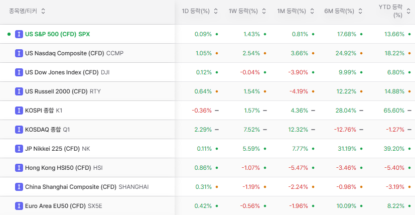

서인원 드림
Market Letter
소강 상태
안녕하세요.
서인원입니다.
어느덧 10월입니다. 지난달에는 갈피를 잃은 시장과 쏠림 이후의 대응에 대해 말씀드렸습니다. 한 달이 지났지만, 우리 시장은 여전히 뚜렷한 방향을 잡아가는 과정에 있습니다.
달라진 시장
미국 증시는 신고가 부근의 흐름을 이어가는 반면, 우리나라는 등락을 반복하고 있습니다. 급락 당시의 긴장감은 다소 잦아들었지만, 그렇다고 모든 불안이 해소된 것은 아닙니다. 겉으로는 소강 상태에 들어선 듯 보여도, 시장을 움직이는 조건들은 계속 달라지고 있습니다.

AI를 바라보는 범위도 넓어지고 있습니다. 처음에는 AI 모델을 만드는 회사와 반도체, 서버 등 하드웨어가 중심이었다면, 이제는 데이터센터와 전력 인프라, 그리고 이 투자를 뒷받침하는 금융시장과 자본시장까지 함께 봐야 합니다.
컴퓨팅 자원이 필요하다는 것과, 그 자원을 마련할 돈을 계속 조달할 수 있다는 것은 별개의 문제입니다. 기술과 수요가 발전하더라도 투자 규모가 커질수록 자금조달 비용과 회수 가능성은 더욱 중요해집니다.
소프트뱅크의 오픈AI 투자 관련 자금조달 과정과 빅테크들의 미국 외으 타 국가에서 진행중인 동시다발적인 채권 발행도 이러한 점을 보여줍니다. 이를 곧바로 AI 투자 중단의 신호로 볼 수는 없지만, 거대한 투자계획을 실행하는 데에는 기술에 대한 확신만큼 금융의 조건도 중요하다는 뜻입니다.
일반주주 보호가 미흡하다는 비판을 받은 의무공개매수제도 법안의 본회의 상정이 보류됐습니다. 제도 개선이 완성된 것은 아니지만, 일반주주의 권리를 둘러싼 문제 제기가 실제 입법 과정에 영향을 주고 있다는 점에서 한국 시장의 저변은 조금씩 나아지고 있다고 생각합니다.
높아진 눈높이
미국 10년물 국채 금리는 5%를 넘어섰고, 10월 2일 기준 5.28%를 기록했습니다. 미국의 30년 고정 모기지 평균금리도 10월 1일 기준 7.28%로 높아졌습니다. 국내 시장금리 역시 최근 상승한 수준에서 움직이고 있습니다.
즉, 투자할 때 비교의 기준이 되는 수익률 자체가 높아졌습니다.
상대적으로 낮은 위험을 감수하는 자산에서도 이전보다 높은 금리를 받을 수 있다면, 주식에는 그만큼 더 높은 기대수익이나 더 확실한 성장의 근거를 요구하게 됩니다. 기업 입장에서는 돈을 빌리는 비용이 높아지고, 투자자 입장에서는 미래의 이익에 지금 얼마를 지불할 것인지 더 까다롭게 따져보게 됩니다.
AI도 이 문제에서 자유롭지 않습니다. 대규모 인프라 투자를 위해 회사채와 프로젝트 금융을 활용할수록 금리와 자금조달 여건의 영향을 받습니다. 반대로 AI 투자를 위한 대규모 자금 수요가 채권시장의 부담을 더할 가능성도 있습니다. 물론 금리 상승을 AI 하나로 설명할 수는 없습니다. 재정, 물가, 경기 등 여러 요인을 함께 봐야 합니다.
중요한 것은 이들이 서로 연결되어 있다는 점입니다. AI 모델의 수익화, 하드웨어 수요, 전력 공급, 자금조달 가운데 어느 한 곳의 변화가 다른 곳으로 연쇄적으로 영향을 줄 수 있습니다.
어떤 계기가 시작점이 될지는 알 수 없습니다. 다만 이런 상황이 올 수 있다는 사실은 꼭 염두에 두어야 합니다.
한편 저는 Meta의 AI 에이전트 Muse를 직접 사용하면서 컴퓨팅 자원에 대한 수요가 계속될 수 있겠다는 생각도 하고 있습니다. 질문에 답하는 것을 넘어 실제 업무를 맡기기 시작하면, AI가 처리해야 할 일의 범위가 달라집니다.
어떻게 대응할 것인가
제 대응은 지난달과 크게 다르지 않습니다. 바벨전략입니다.
한쪽에는 AI의 성장에 노출되는 비중을 두겠습니다. 기술의 변화와 실제 사용의 확산을 외면하지 않되, 그 안에서도 수요가 실적과 현금흐름으로 이어질 가능성이 있는 기업을 선별하겠습니다.
다른 한쪽에는 AI 투자 사이클에 대한 직접적인 의존도가 낮고, 자체적인 수요와 경쟁력을 가진 산업을 두겠습니다. 여기에 현금과 안전자산을 함께 보유해 시장이 흔들릴 때 대응할 여력을 남겨두겠습니다.
장기채나 신용위험이 큰 상품은 현금의 대체제가 아닙니다.
읽어볼 만한 글 모음
외부 글은 각 작성자의 개인 의견이며, 투자 판단 전에는 본인의 투자성향과 위험요인을 함께 확인하시기 바랍니다.
마무리
시장의 방향이 선명해질 때까지 모든 투자를 멈출 필요도, 기회를 놓칠까 봐 한쪽으로 몰아갈 필요도 없다고 생각합니다.
AI가 만드는 변화에는 참여하되, 하나의 기대에 자산 전체를 맡기지는 않겠습니다. 감당할 수 있는 비중을 유지하고, 가격과 투자 아이디어를 확인하며 분할로 대응하겠습니다.
보유 자산이나 앞으로의 자금 운용에 대해 상의하고 싶으시면 언제든 편하게 연락 주시기 바랍니다.
감사합니다.
2026년 10월 6일
서인원 드림